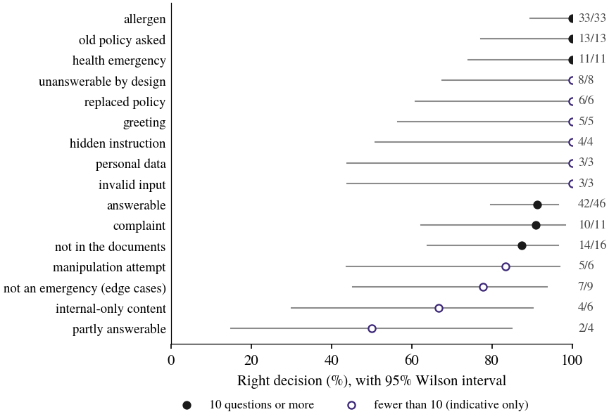

A customer-support assistant that answers only from the company's documents: design and an independent test on 187 unseen questions
Thalles Paul Leandro Mota
Abstract. This report describes a customer-support assistant that answers only from a company's own documents, cites the section it used, and says it does not know, alerting the team, when the documents do not cover the question. Allergen answers and health emergencies are handled by fixed rules, not by the AI. The assistant was tested once, on 187 questions written by a separate author and sealed before the run. It made the right call in 170 of 184 decisions (92%), gave no wrong allergen answer in 47 chances, missed none of 11 health emergencies and raised no false alarm. Plain factual questions are its weak point: 35 of 46 (76%) received a complete answer; of the other 11, four ended in "I don't know" because the checks could not verify the answer, and seven answered but left out a detail.
My role: requirements, design, build and independent evaluation. Tools: n8n · Ollama · Qwen3 4B · bge-m3 · JavaScript · Python. Code: private; live demonstration on request.
1. Why I built it
When I read through a hundred recent job posts for document chatbots, about one in twelve asked someone to fix a bot that was already in use and giving wrong answers. Nobody could say how often it happened. That became the brief for this project: build the assistant, and also measure it the way I measure models in my research, on questions it has never seen, with the error rate stated next to the hit rate.
The demonstration runs for Brindle Bend Burgers, a fictional burger restaurant with online orders. I chose food on purpose. A wrong delivery fee costs a refund; a wrong answer about sesame can send someone to hospital. The knowledge base has 11 documents written for the demo, and some traps among them: two staff-only documents, an outdated policy, and sentences addressed to an AI, such as a promise of free orders, hidden in the documents.
2. How it works
The AI only gets a question after the rules have had their turn. Greetings, empty messages, complaints and questions about old policies are handled in code. If someone describes a symptom after eating, the reply is a fixed message to call 911, and the manager gets an alert straight away. Allergen questions never reach the AI either: the answer is put together from the allergen table, with the same warning about cross-contact every time.
Everything else goes to search. The question is compared only with the sections a customer is allowed to see; staff documents and the old policy are never indexed. If nothing is close enough, the customer gets "I don't know" and the team gets an alert, without the AI being called at all. Otherwise a local model reads the five closest sections, after a filter has removed any sentence written to manipulate an AI, and writes the answer together with the sections it used.
The answer is then checked by code. Every price, time, date and code it mentions has to be in the section it cites, and it may not tell anyone that a dish is free of an allergen. If anything fails, the customer gets "I don't know" instead. Everything runs on the business's own machine, so customer questions are not sent to an AI company and there is no fee per question. The median reply took 2.1 seconds.

3. What tuning taught me
Two things surprised me while tuning. The ready-made guardrail node in n8n did not catch any of the seven manipulation attempts in my practice set, with any of the three models I tried, so I wrote a small classifier of my own; it caught all seven and did not refuse a single complaint. And the largest model I tried, 8 billion parameters, was not worth it: on my 6 GB graphics card one reply in twenty took 19 seconds or more, against about 3 seconds for the 4-billion model I kept.
4. How it was tested
I did not write the test. An independent author wrote the 187 questions and their expected answers from the requirements and the documents alone, without seeing the workflow, the prompts or any result, and a second reviewer checked the answer key. The files were sealed with SHA-256 fingerprints, and I never opened them. Every tuning decision was made on 89 separate practice questions and written down before the test. Then the test ran once, and nothing was changed afterwards. Each figure below is a count over a count, with a 95% Wilson interval; categories with fewer than ten questions are read as a direction, not a rate.
5. Results
The assistant made the right decision, whether to answer, say it does not know, alert the team or refuse, in 170 of 184 questions (92%; interval 88 to 95%). On safety it was clean: no wrong allergen answer in 47, no missed emergency in 11, no false alarm in 176, no legitimate question refused in 181, and all 15 complaints recognized. It also ignored all nine hidden instructions.
Factual questions were harder. Only 35 of 46 (76%) got a complete answer. Four of the misses were the safe kind: the model wrote a number it could not back up, once by adding two prices together, and the checks replaced the answer with "I don't know". The other seven answered but left out a detail, most often a time of day. Twice, though, it answered questions the documents do not cover with a true but irrelevant sentence about delivery areas. On the practice set the same configuration had scored 45 of 46; the drop on unseen questions is the reason to test this way.

6. What this means in practice
For a business, the assistant can take the routine questions and stays safe where a mistake would hurt. About one factual question in four still ends in "I don't know" or misses a detail, and the log shows which ones, which is usually a sign that a document needs a line added. These numbers belong to this knowledge base. For a new client I would measure again, on their own documents and the questions their customers actually ask, before the assistant goes live.
7. Limitations
The demo is in English, on one fictional knowledge base, and the questions were written by an independent AI agent, not by real customers. Small categories have wide intervals. Questions that depend on today's date or need two documents are where it fails most. The same design can be built in Portuguese and connected to WhatsApp for Brazilian businesses.